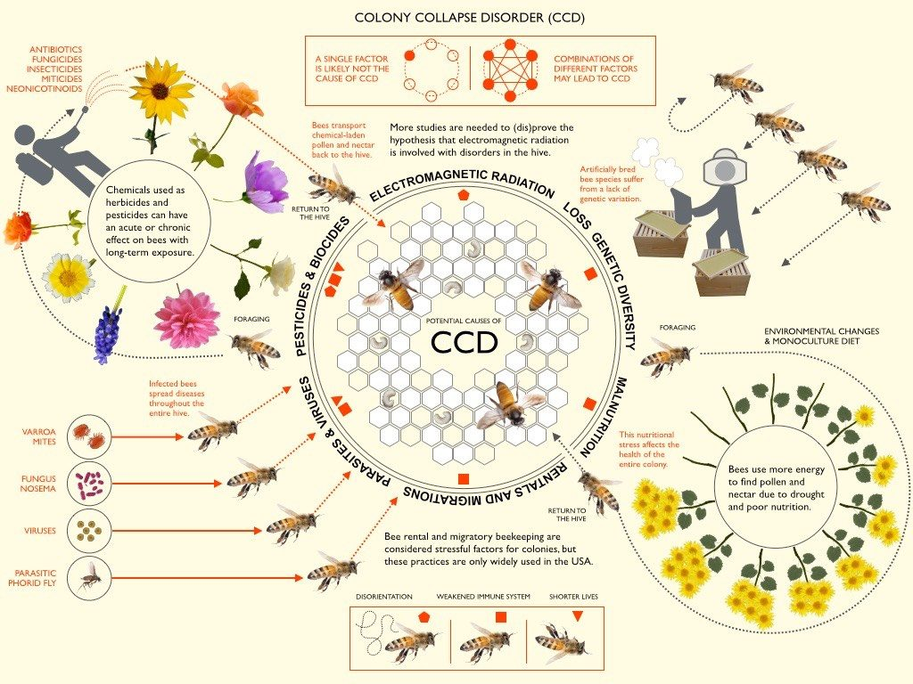

Even when applied correctly, pesticides can have adverse impacts on bees by reducing their breeding success and resistance to disease. Scientists have found that exposure to pesticides can impair honeybees' ability to navigate, bumblebees' ability to reproduce and solitary bees' ability to reproduce any young at all. Pesticides are designed to kill unwanted pests, but their toxic properties and widespread use are also harming beneficial insects such as bees. Neonicotinoids are a particularly harmful group of bee-harming pesticides. When a bee feeds on pollen or nectar containing them, their central nervous system can be affected. This affects tasks that bees depend on to survive such as feeding, homing, foraging and reproducing.
Bee keepers guard their honeybee colonies against a range of pests and diseases. These include the varroa mite – a tiny parasitic mite that attaches itself to a honey bee, transmits disease and saps its strength – or fungal diseases that affect the closely knit colony.
As average monthly temperatures rise, flowers bloom earlier in the spring, creating a potential mismatch in seasonal timing between when flowers produce pollen and when bees are ready to feed on that pollen. Even a small mismatch of three to six days could negatively affect bees’ health, making them less likely to reproduce and less resistant to predators and parasites.
